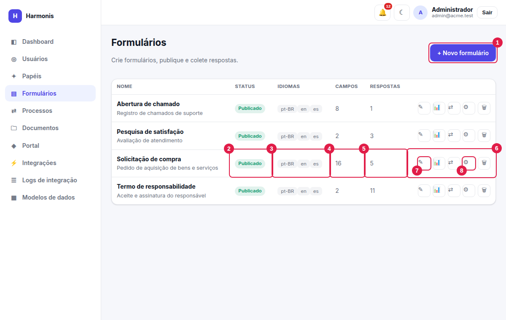
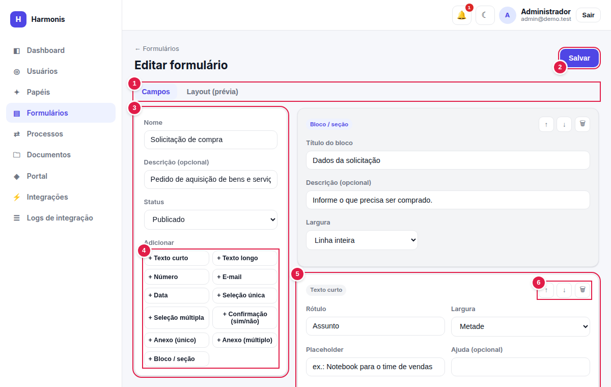
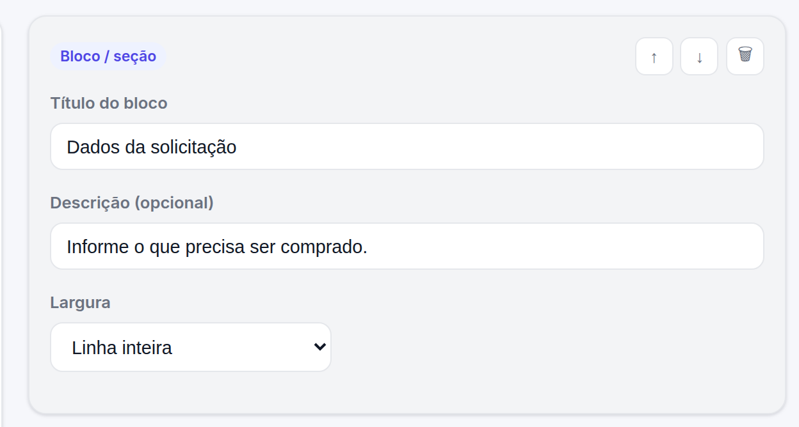
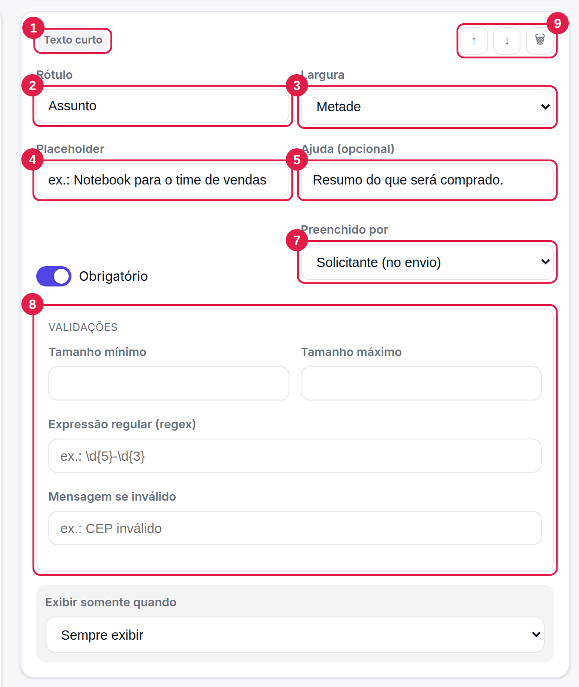
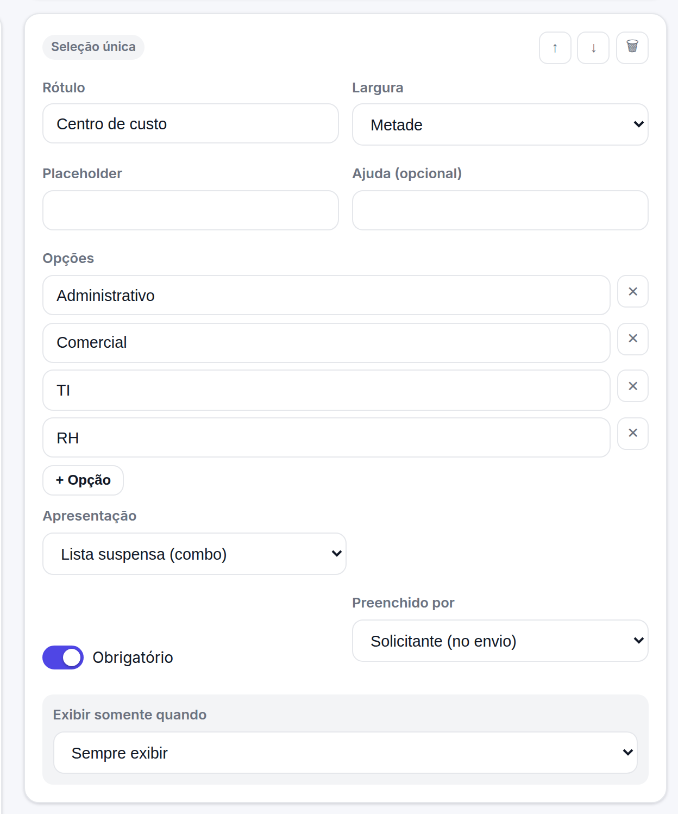
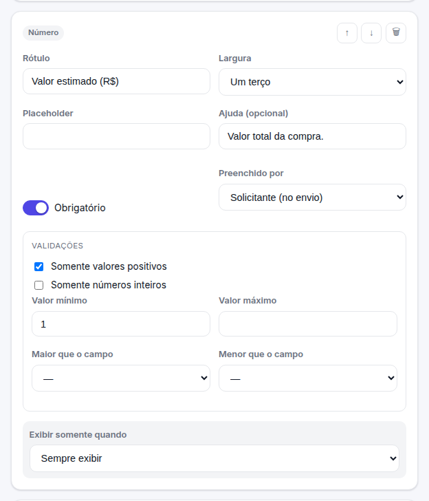
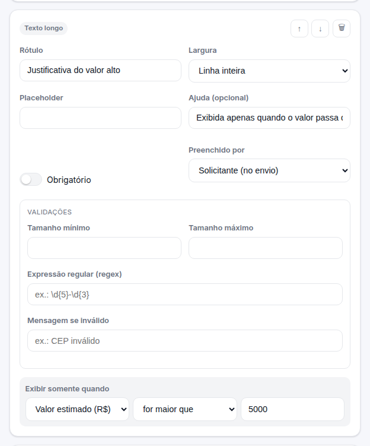
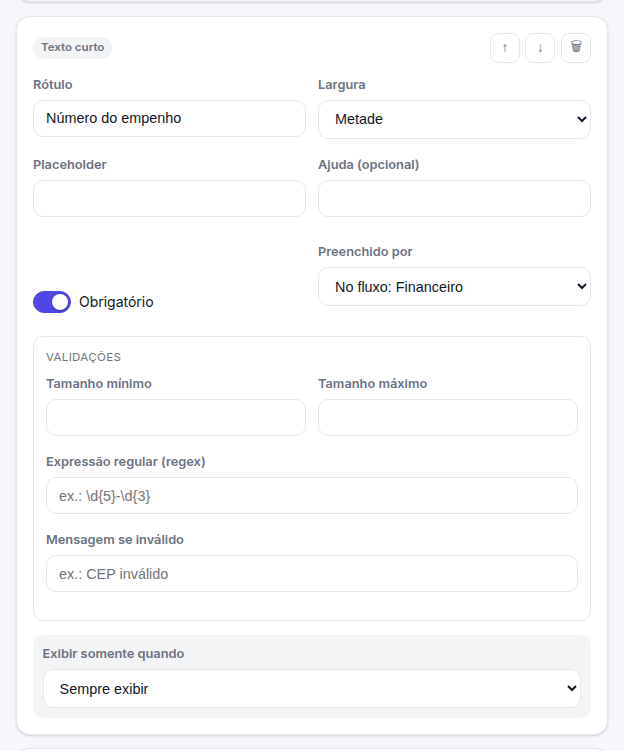
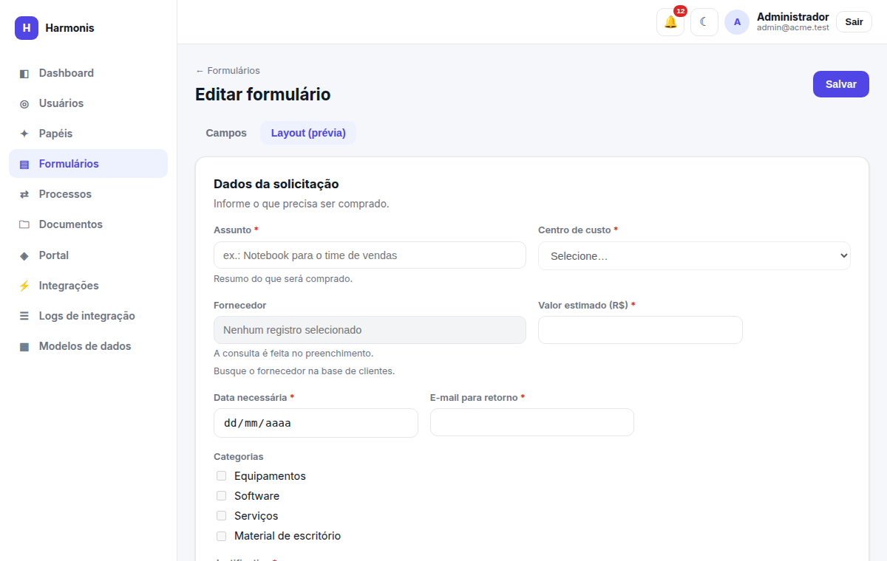

Construtor de formulários
Como montar um formulário: tipos de campo, cada propriedade, validações, exibição condicional, anexos e campos preenchidos por aprovadores.
Ver a lista e preencher: forms.view · criar: forms.create · editar campos e fluxo: forms.update ·
excluir: forms.delete · ver respostas: forms.submissions.
A lista de formulários

- + Novo formulário — abre o construtor em branco (
forms.create). - Status — Rascunho (em construção, não recebe respostas) ou Publicado (aberto a respostas).
- Ações da linha — da esquerda para a direita:
- ✎ Preencher — só em formulários publicados.
- 📊 Respostas —
forms.submissions. - ⇄ Fluxo de aprovação —
forms.update. - ⚙ Editar o formulário (campos) —
forms.update. - 🗑 Excluir —
forms.delete.
As colunas Campos e Respostas mostram, respectivamente, quantos campos o formulário tem e quantas respostas já recebeu.
A exclusão remove o formulário, suas respostas e os arquivos anexados. Nesta versão, formulários que já possuem processos de aprovação podem ser recusados com erro na exclusão. Se precisar tirar um formulário de uso, volte-o para Rascunho (ele deixa de aceitar respostas e some das opções de preenchimento).
O construtor

- Abas — Campos (edição) e Layout (prévia) (mostra como o solicitante verá o formulário, sem enviar nada).
- Salvar — grava o formulário. Fica desabilitado enquanto o Nome estiver vazio. Ao salvar um formulário novo, você é levado à tela de edição dele.
- Painel de dados — nome, descrição e status do formulário (detalhado abaixo).
- Adicionar — botões para incluir cada tipo de campo. O novo campo entra no final da lista.
- Cartão do campo — todas as propriedades de um campo.
- ↑ ↓ 🗑 — mover o campo para cima/baixo ou removê-lo. A ordem aqui é a ordem em que os campos aparecem.
Dados do formulário
| Campo | Obrigatório | Descrição |
|---|---|---|
| Nome | Sim | Título exibido nas listas, no preenchimento e nos processos. O sistema deriva dele um endereço único (slug) automaticamente. |
| Descrição (opcional) | Não | Frase curta exibida abaixo do nome na lista e no topo do preenchimento. |
| Idiomas do formulário | Sim | Um ou mais entre Português, English e Español. Só quem tem esse idioma no perfil enxerga o formulário para preencher (veja abaixo). Novos formulários vêm com os três marcados. |
| Status | — | Rascunho: em construção; não aceita respostas. Publicado: aparece com o ícone ✎ e aceita respostas. |
Monte os campos em Rascunho, confira em Layout (prévia), desenhe o fluxo e só então Publique.
Idiomas do formulário
Cada formulário é vinculado a um ou mais idiomas. É uma regra de visibilidade: o conteúdo (nome, campos, ajudas) é o que você escreveu, e o vínculo controla quem pode preencher.
- Uma pessoa com idioma English não vê, na lista, formulários vinculados apenas a Português, e vice-versa. Abrir o endereço diretamente também é bloqueado (“Formulário não encontrado”).
- Quem gerencia formulários (
forms.createouforms.update) enxerga todos, com a coluna Idiomas na lista, para poder editá-los. - É obrigatório marcar ao menos um idioma. Formulários que já existiam ficam disponíveis nos três.
- Quem aprova continua recebendo as tarefas de qualquer formulário, mesmo de outro idioma.
Para atender equipes em idiomas diferentes com textos próprios, crie um formulário por idioma e vincule cada um ao seu idioma.
Tipos de campo
São onze tipos. Todos (exceto Bloco/seção) compartilham as propriedades comuns; alguns têm configurações próprias.
| Tipo | Como aparece | Valor guardado | Configurações específicas |
|---|---|---|---|
| Texto curto | Caixa de uma linha. | Texto | Validações de tamanho e regex. |
| Texto longo | Caixa de várias linhas. | Texto | Validações de tamanho e regex. |
| Número | Caixa numérica. | Número | Positivo, inteiro, mínimo, máximo, comparação com outro número. |
| Caixa de e-mail (formato é verificado). | Texto | Tamanho e regex adicionais. | |
| Data | Seletor de data. | Data (AAAA-MM-DD) | Data mínima/máxima, comparação com outra data. |
| Seleção única | Lista suspensa ou botões de rádio. | Uma das opções | Opções; apresentação (combo/radio). |
| Seleção múltipla | Lista de seleção múltipla ou caixas de seleção. | Lista de opções | Opções; apresentação (combo/checkbox). |
| Confirmação (sim/não) | Interruptor com o rótulo ao lado. | Sim/Não | — |
| Anexo (único) | Botão de enviar um arquivo. | Referência ao arquivo | Tipos aceitos e tamanho máximo. |
| Anexo (múltiplo) | Botão para enviar vários arquivos. | Lista de referências | Tipos aceitos e tamanho máximo. |
| Bloco / seção | Título (e texto de apoio) que separa partes do formulário. Não recebe resposta. | — | Título, descrição, largura. |
Bloco / seção

| Campo | Descrição |
|---|---|
| Título do bloco | Texto em destaque que abre a seção (ex.: Dados da solicitação). |
| Descrição (opcional) | Texto de apoio abaixo do título. |
| Largura | Sempre ocupa a linha inteira no preenchimento; use para separar visualmente as partes. |
Blocos não aparecem nas respostas, no CSV nem nos dados enviados às integrações.
Propriedades comuns de um campo

- Tipo — etiqueta que informa o tipo do campo (não pode ser trocado; remova e crie outro se precisar).
- Rótulo — o texto exibido acima do campo e usado nas respostas, no CSV e na linha do tempo.
- Largura — quanto da linha o campo ocupa: Linha inteira, Metade ou Um terço. Campos vizinhos de largura menor ficam lado a lado.
- Placeholder — texto-exemplo cinza dentro do campo vazio (não existe para Confirmação).
- Ajuda (opcional) — texto pequeno exibido sob o campo para orientar o preenchimento.
- Obrigatório — o envio é recusado enquanto estiver vazio. Aparece um * junto ao rótulo.
- Preenchido por — quem completa o campo: o Solicitante (no envio) ou um papel no fluxo (veja abaixo).
- Validações — regras extras conforme o tipo (veja Validações).
- Mover/remover — ↑ ↓ 🗑.
| Propriedade | Valores | Observações |
|---|---|---|
| Rótulo | Texto | Novos campos nascem como “Novo campo”. Use rótulos claros: eles viram os títulos das colunas das respostas. |
| Largura | Linha inteira · Metade · Um terço | Em telas pequenas todos os campos ocupam a linha inteira. |
| Placeholder | Texto | Apenas orientação visual; não é valor. |
| Ajuda | Texto | Aparece também para quem preenche durante o fluxo. |
| Obrigatório | Ligado/desligado | Campos ocultos por uma condição não são exigidos. Campos “preenchidos no fluxo” são exigidos só na etapa do papel responsável. |
| Preenchido por | Solicitante · No fluxo: papel | Lista todos os papéis do workspace. |
Ao salvar, cada campo ganha um identificador automático (algo como campo_a1b2c3), usado nas condições, comparações e nos dados enviados às integrações.
Por isso, salve o formulário antes de usar um campo recém-criado em uma condição ou comparação — até salvar, ele ainda não aparece nas listas de escolha.
Opções e apresentação (seleção única e múltipla)

| Campo | Descrição |
|---|---|
| Opções | Lista de textos. + Opção acrescenta uma nova (“Opção N”); ✕ remove. A ordem digitada é a ordem exibida. A resposta deve ser uma das opções: valores fora da lista são recusados (“Opção inválida.”). |
| Apresentação — seleção única | Lista suspensa (combo): economiza espaço. Múltipla escolha (radio): todas as opções visíveis; melhor para poucas opções. |
| Apresentação — seleção múltipla | Lista de seleção múltipla ou Caixas de seleção (checkbox): o usuário marca uma ou mais opções. |
Condições de fluxo e de exibição comparam o texto da opção. Evite renomear opções já usadas em condições sem revisar o fluxo.
Validações
Além de “Obrigatório”, cada tipo oferece regras que são verificadas no envio (e novamente no servidor). A caixa Validações só mostra o que se aplica ao tipo do campo.
Número

| Opção | Efeito |
|---|---|
| Somente valores positivos | Rejeita zero e negativos. |
| Somente números inteiros | Rejeita casas decimais. |
| Valor mínimo / máximo | Limites inclusivos. |
| Maior que o campo | O valor deve ser maior que o de outro campo numérico escolhido (ex.: “Valor final” maior que “Valor inicial”). |
| Menor que o campo | O valor deve ser menor que o de outro campo numérico. |
Data
| Opção | Efeito |
|---|---|
| Data mínima / máxima | Intervalo permitido (inclusivo). |
| Posterior ao campo | A data deve ser depois da de outro campo de data (ex.: “Data de fim” posterior a “Data de início”). |
| Anterior ao campo | A data deve ser antes da de outro campo de data. |
Texto curto, texto longo e e-mail
| Opção | Efeito |
|---|---|
| Tamanho mínimo / máximo | Quantidade de caracteres permitida. |
| Expressão regular (regex) | Padrão que o texto precisa obedecer por inteiro (ex.: \d{5}-\d{3} para um CEP). |
| Mensagem se inválido | Texto exibido quando o padrão falha (ex.: CEP inválido). Sem mensagem, aparece “Formato inválido.”. |
Só é possível comparar campos do mesmo tipo (número com número, data com data). A lista de escolha mostra apenas esses campos.
Exibição condicional

A caixa Exibir somente quando faz o campo aparecer apenas se outro campo atender a uma condição. Deixe em Sempre exibir para que o campo seja sempre mostrado.
| Operador | Verdadeiro quando… | Precisa de valor? |
|---|---|---|
| estiver preenchido | o outro campo tem qualquer valor. | Não |
| estiver vazio | o outro campo está vazio. | Não |
| for igual a | o valor é igual (números comparam como números; textos ignoram maiúsculas/minúsculas). | Sim |
| for diferente de | o valor é diferente. | Sim |
| for maior que / maior ou igual a | comparação numérica. | Sim |
| for menor que / menor ou igual a | comparação numérica. | Sim |
| contiver | o texto contém o trecho (sem diferenciar maiúsculas). | Sim |
- Um campo oculto não é exigido nem validado, e não vai nas respostas.
- Para Confirmação (sim/não), compare com
1(sim) ou0(não). - O resultado é recalculado enquanto o usuário digita, no preenchimento.
Campos de anexo
| Campo | Descrição |
|---|---|
| Tipos aceitos | Lista separada por vírgulas de extensões (.pdf, .png) e/ou tipos MIME (image/*). Vazio = qualquer tipo. |
| Tamanho máximo (MB) | Limite por arquivo, aceita decimais (ex.: 0,5). O servidor impõe ainda um teto geral de 10 MB por arquivo. |
- O arquivo é enviado assim que escolhido (antes de clicar em Enviar). Se o tipo ou o tamanho não forem aceitos, a mensagem de erro aparece logo abaixo do campo.
- Arquivos enviados e depois removidos (✕) antes do envio do formulário são apagados do servidor.
- Anexo único aceita um arquivo; anexo múltiplo aceita vários (cada um é validado separadamente).
- Os arquivos ficam em armazenamento privado; só são baixados por usuários autenticados com acesso (veja resgatar anexos).
“Preenchido por”: campos completados no fluxo

Por padrão o Solicitante preenche todos os campos ao enviar. Se você escolher No fluxo: <papel>, o campo:
- não aparece para o solicitante no preenchimento;
- é apresentado ao aprovador daquela etapa, no bloco “Preencha os campos sob sua responsabilidade”, quando ele abre a tarefa para decidir;
- se for obrigatório, o aprovador não consegue aprovar sem preenchê-lo;
- é gravado junto à resposta original e passa a constar nas respostas, no CSV e nas integrações.
Todo papel usado em “Preenchido por” precisa ser aprovador (por papel) de ao menos uma etapa do fluxo — caso contrário o campo nunca seria apresentado a ninguém. O sistema impede salvar nessa situação e informa: “O campo ‘X’ é preenchido pelo papel ‘Y’, mas nenhuma etapa do fluxo é aprovada por esse papel…”. A verificação acontece ao salvar o fluxo e ao salvar o formulário (quando já existe fluxo).
Não use um campo complementar em condições de decisão anteriores à etapa em que ele é preenchido: até lá ele estará vazio, e o caminho escolhido pelo fluxo poderá mudar quando o valor for informado.
Aba “Layout (prévia)”

Boas práticas
- Agrupe campos relacionados em blocos e use larguras (metade, um terço) para formulários curtos e fáceis de escanear.
- Prefira seleção a texto livre quando as respostas alimentam condições de fluxo (evita erros de digitação).
- Use Ajuda para explicar formatos e Placeholder para exemplos.
- Marque como obrigatório só o que o processo realmente exige.
- Teste: publique, envie uma resposta de teste e percorra o fluxo antes de divulgar.
- Evite apagar campos de um formulário em uso: respostas antigas continuam guardadas, mas condições do fluxo que apontam para o campo precisam ser ajustadas (o fluxo recusa condições para campos inexistentes: “Campo de condição inexistente”).